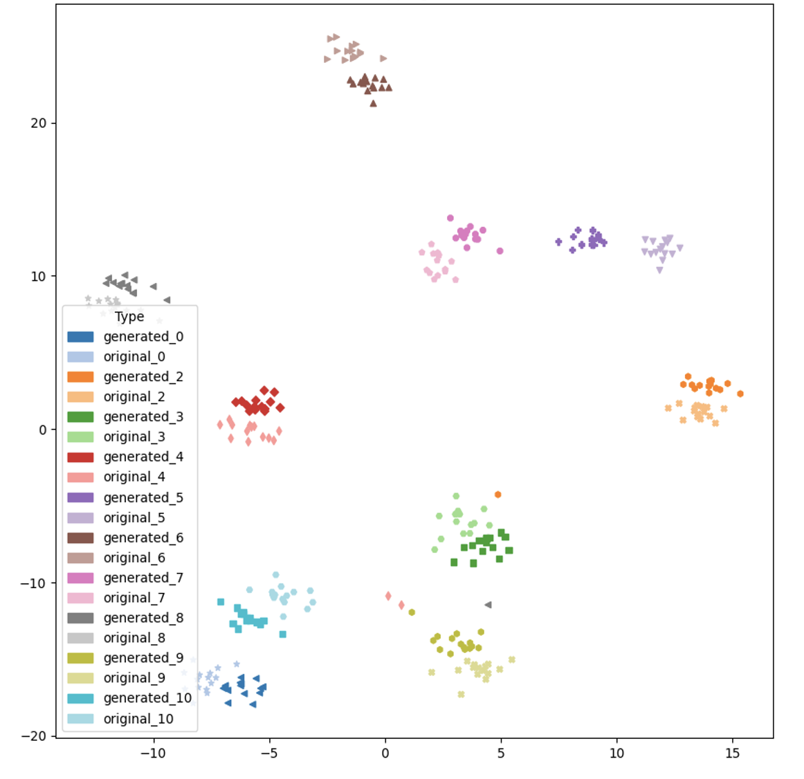
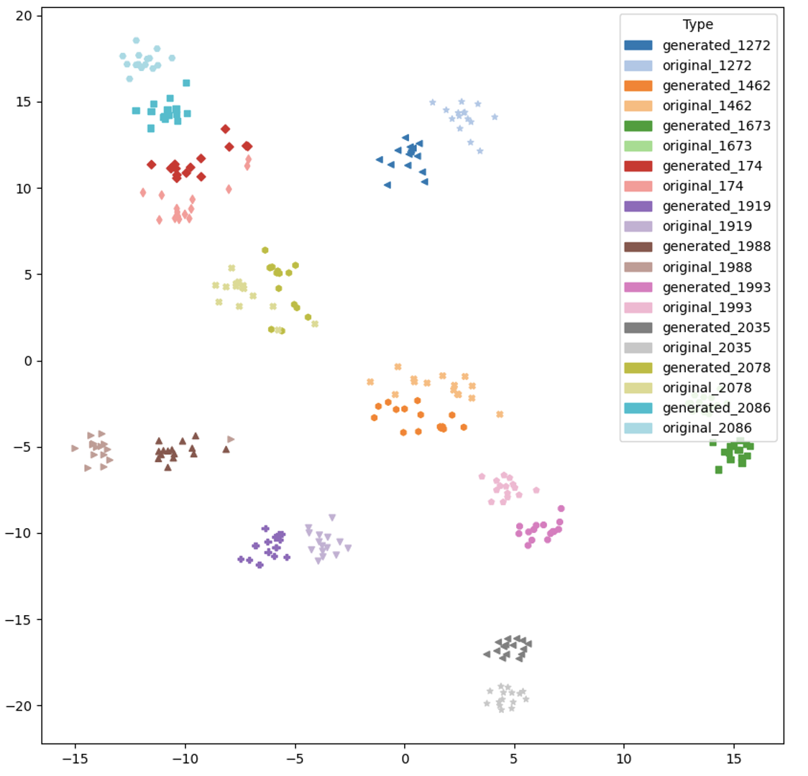

We present audio examples for our paper ACE-VC. To perform zero-shot voice conversion, we use our synthesis model to combine the content embedding of any given source utterance with the speaker embedding of the target speaker, both of which are derived from our Speech Representation Extractor. ACE-VC can perform voice conversion in two modes:
To perform voice conversion for speakers not seen during training, we randomly select 10 male and 10 female speakers from the dev-clean subset of the LibriTTS dataset as our target speakers. Next, we choose 10 random source utterances from the remaining speakers and perform voice conversion for each of the 20 speakers. We present a few audio examples for this experiment in the table below.
| Conversion Type | Source Utterance | Target Speaker | ACE-VC (Adapt) | ACE-VC (Mimic) |
|---|
To perform voice conversion for seen speakers, we use the hold-out utterances of speakers seen during training. Similar to the unseen speaker scenario, we select 10 male and 10 female speakers as the target speakers and choose source utterances from other speakers.
| Conversion Type | Source Utterance | Target Speaker | ACE-VC (Adapt) | ACE-VC (Mimic) |
|---|
We present audio examples for the same pair of source and target audio using different voice conversion techniques including our own. We use the Adapt mode for our technique (ACE-VC). We produce audio examples for other techniques using the voice convesion inference script provided in the respective github repositories.
| Conversion Type | Source Utterance | Target Speaker | MediumVC | S3PRL-VC | YourTTS | ACE-VC (Ours) |
|---|
| Seen Speakers | Unseen Speakers |
|---|---|
|  |  |
We present audio examples where source utterances are from expressive/emotional speakers. We use the ADEPT dataset for these examples. The source utterances are from the expressive audio of the two speakers in the dataset. The neutral utterances are used for deriving the speaker embedding. Both the male and female speakers are not seen during training.
| Conversion Type | Source Utterance | Target Speaker | ACE-VC (Adapt) | ACE-VC (Mimic) |
|---|
ACE-VC synthesizer allows control over the pace/duration of the synthesized utterances by changing the target duration for each time-step. We can slow down or speed up the speaking rate and also do more fine-grained control. In the following table we present audio examples for speeding up and slowing down the synthesis utterance.
| Conversion Type | Source Utterance | Target Speaker | Same Pace | Fast Pace (1.5 X) | Slow Pace (0.7 X) |
|---|
ACE-VC synthesizer allows control over pitch contour (fundamental frequency) of the synthesized speech. We can perform fine-grained control over the modulation of the pitch contour or simply scale the pitch contour by a factor. In the below table we present audio examples obtained by scaling the reference pitch contour by a factor.
| Conversion Type | Source Utterance | Target Speaker | Same Pitch (1X) | Higher Pitch (3X) | Lower Pitch (0.5X) |
|---|